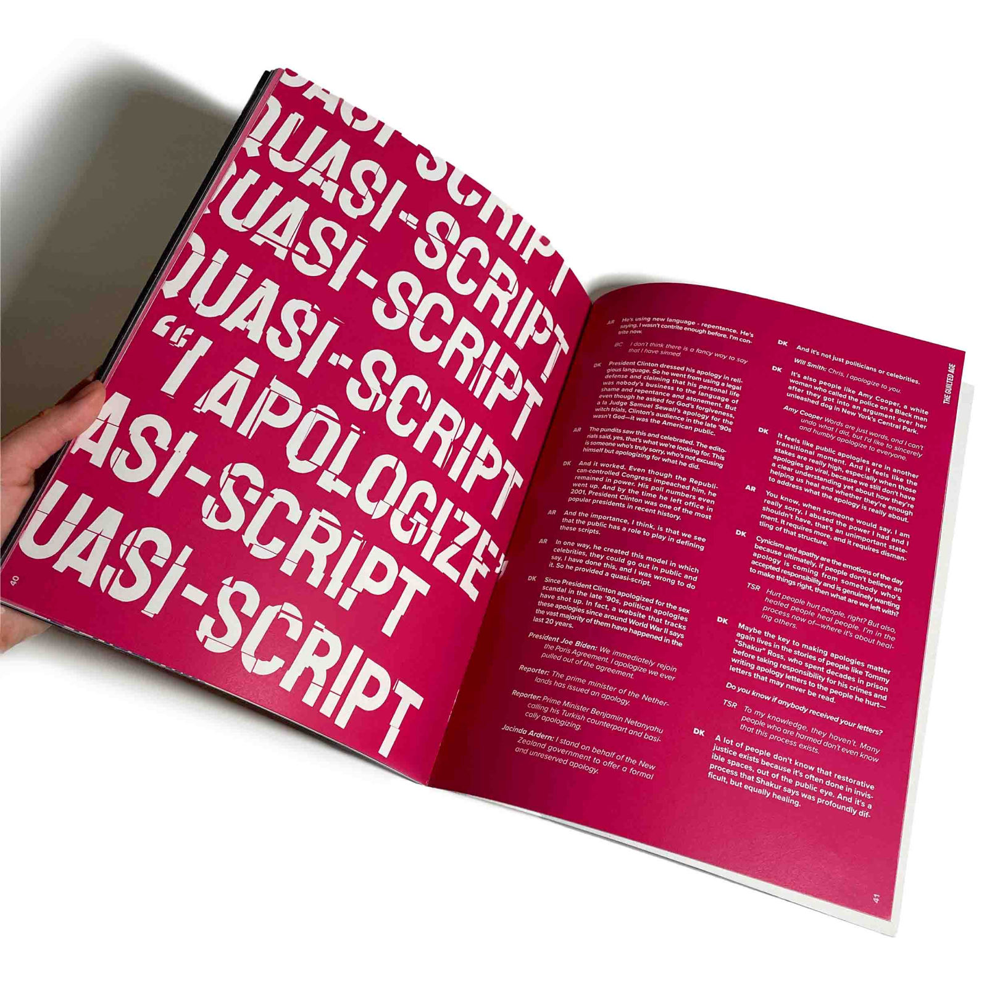
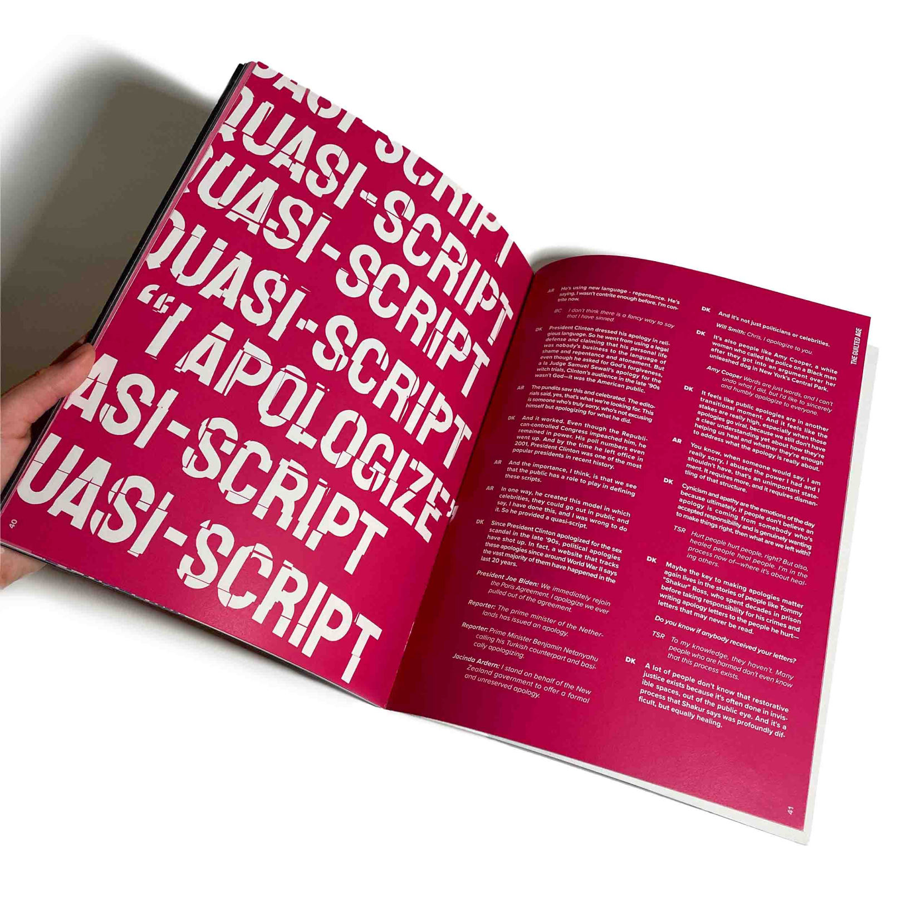

Apology as Spectacle
Scope
Book Design
Content Curation
Book Production
Printing and Trimming
Book Binding
I designed a book from cover to cover for the NPR Throughline Podcast Episode: The Way Back, which is about how public apologies started as genuine but then turned into disingenuous spectacles.
The What and Why
Moodboards

For the early stages of the design process, I pulled inspiration from various sources, including tabloids magazines that are known to cover celebrity scandals, that could be possible visual translations of the podcast's content.
For both of these moodboards, I leaned into loud visual language, such as big bold text and high contrast imagery. Considering the text was about "spectacle," I decided the book design should be its own form of spectacle.
Flat Plan and Book Map
Dividing the book into four equal parts, each one covering a different public apology, I determined the pacing of content within each part so that some spreads would have larger type and image moments with less copy and other spreads would be heavier with copy.
Utilizing a variety of layouts in this way, I was able to keep the reading experience engaging and highlight certain parts of the text, giving the reader a break from larger blocks of text without removing necessary information.
Final Design Spreads
 

By using two different display fonts and different image treatments, I represented the dichotomy between sincerity and facade.
Imagery from more sincere displays of apology are left whole while imagery from insincere instances is sliced up and overlapped, forming calculated chaos.